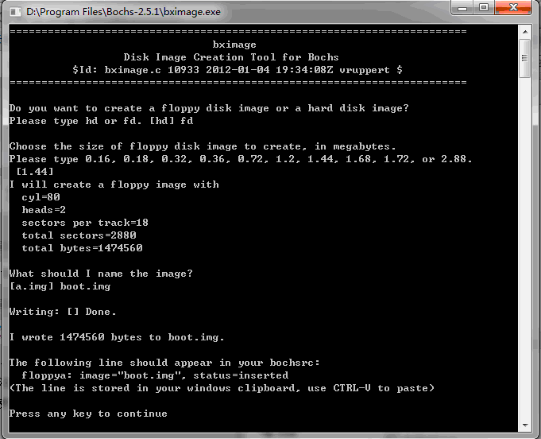
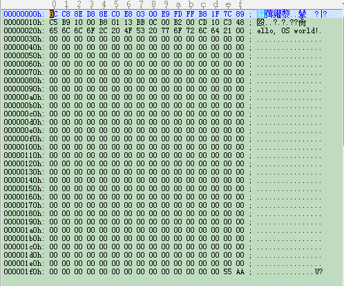
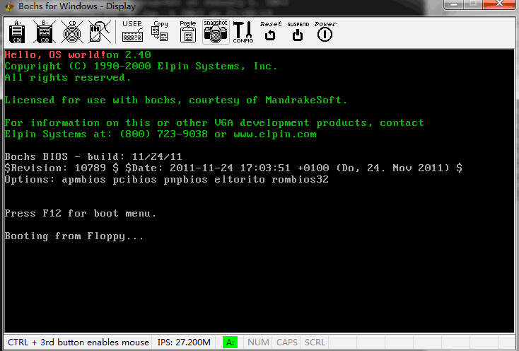

在windows上运行息的操作系统的步骤：.asm->.bim->.img->加载和运行
1. 一、制作img镜像文件
1.1. 方法一：
1.使用bochs自带的工具bximage.exe生成一个.img文件，生成的是一个全0的空文件，需要往里面写入内容

2.创建自己的引导程序boot.asm，这段程序从网上找来的，不知道出处
org 07c00h ; 告诉编译器程序加载到 7c00处
mov ax, cs
mov ds, ax
mov es, ax
call DispStr ; 调用显示字符串例程
jmp {% math_inline %} ; 无限循环
DispStr:
mov ax, BootMessage
mov bp, ax ; es:bp = 串地址
mov cx, 16 ; cx = 串长度
mov ax, 01301h ; ah = 13, al = 01h
mov bx, 000ch ; 页号为 0(bh = 0) 黑底红字(bl = 0Ch,高亮)
mov dl, 0
int 10h ; 10h 号中断
ret
BootMessage:
db "Hello, OS world!"
times 510-({% endmath_inline %}-{% math_inline %}$) db 0 ; 填充剩下的空间，使生成的二进制代码恰好为
dw 0xaa55 ; 结束标志
3.使用nasm boot.asm -o boot.bin命令进行反汇编，得到一个512B的.bin文件

4.使用UltraEdit分别打开boot.bin和boot.img，把boot.bin复制到boot.img的前512B中，boot.img制作完成
1.2. 方法二
1.运行WinImage，选择Options -> Setting -> Image ，设置Compression为None
2.File -> New， 选择容量是1.44MB的格式
3.Image -> Boot Sector properties -> MS-DOS
4.保存文件，类型为All files(.)
5.用UltraEdit打开boot.img，保留EB 3C 90 4D开头、55 AA结尾的数据，大小刚好为512B，其余的删去
2. 二、制作bochs配制文件，假设新操作系统的文件夹位置是D:\Program Files\Bochs-2.5.1，文件夹名是floppy
2.1. 方法一：
配置文件：bochsrc.txt
#how much memory the emulated machine will have
megs:4
#filename of ROM images
romimage:file=../BIOS-bochs-latest,address=Oxf0000
vgaromimage:file=../VGABIOS-elpin-2.40
#what disk images will be used
floppya:1_44=boot.img,status=inserted
#Choose the boot disk
boot:a
#where do we send log messages?
log:bochsout.txt
执行文件run.bat
cd "d:\Program Files\Bochs-2.5.1\floppy"
..\bochs -q -f bochsrc.txt
2.2. 方法二：
配置文件：bochsrc.txt
#how much memory the emulated machine will have
megs:4
#filename of ROM images
romimage:file={% endmath_inline %}BXSHARE/BIOS-bochs-latest,address=Oxf0000
#vgaromimage: file={% math_inline %}BXSHARE/VGABIOS-lgpl-latest
vgaromimage: file={% endmath_inline %}BXSHARE/VGABIOS-elpin-2.40
#what disk images will be used
floppya:1_44=boot.img,status=inserted
#Choose the boot disk
boot:a
#where do we send log messages?
log:bochsout.txt
执行文件：run.bat
SET BXSHARE=d:\Program Files\Bochs-2.5.1
..\bochs -q -f bochsrc.txt
3. 三、运行run.bat
